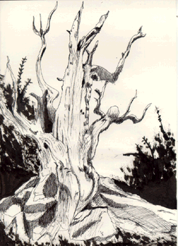

Student Project
Dakota

In the midst of trees
ones feelings seem to be shrouded,
the shadows cast by leaves and needles
steel more than just light
they shield us from hidden anxietys,
noticed only when they are gone.
This is a gift to some,
a torment to others
-Dakota
c. Dakota
ALbert Lowry High School
Winnemucca, Nevada USA
Pen and Ink 9 "X12"
Bristlecone Pine
Latin Name: Pinus Aristata
Age: 4,600 years
Circumference: TBA
Location: Great Basin National Park
Ely, Nevada
 Return to Main Page
Return to Main Page
June Julian jj68@nyu.edu